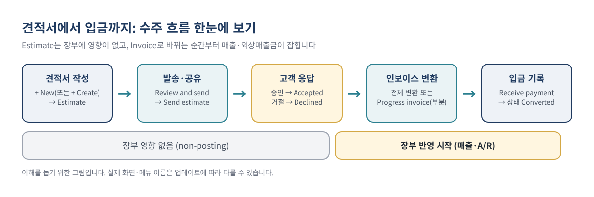
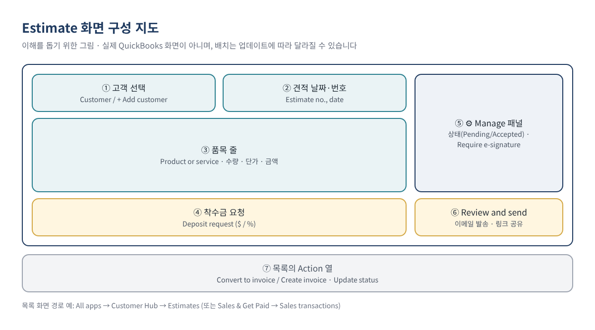
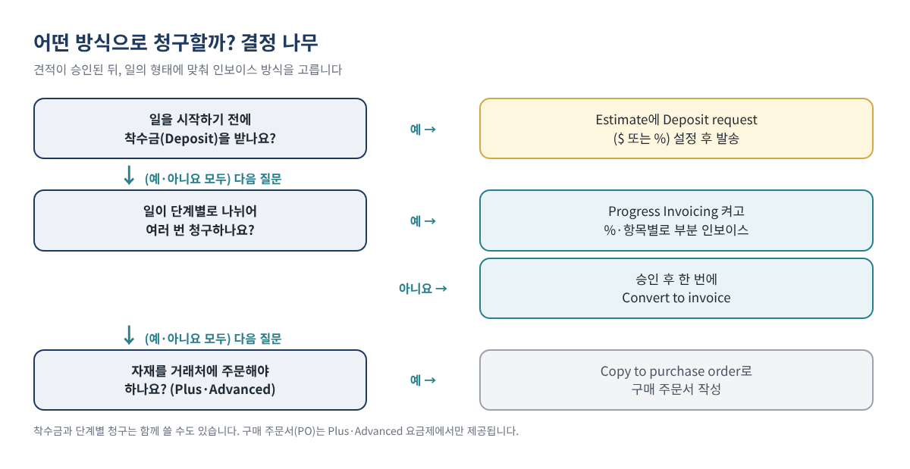
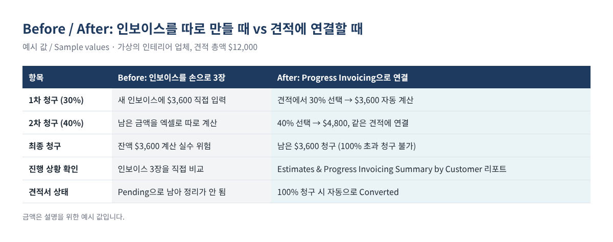

견적서(Estimate)에서 인보이스까지: 승인·착수금·단계별 청구로 수주 흐름 관리하는 법
견적서는 엑셀이나 한글 파일로 따로 만들고, 일이 끝나면 QuickBooks Online(QBO)에서 인보이스를 처음부터 다시 입력하는 경우가 많습니다. 이렇게 하면 같은 품목과 금액을 두 번 입력하게 되고, 착수금을 얼마 받았는지, 단계별로 얼마를 청구했고 얼마가 남았는지를 따로 메모해 두어야 합니다. 공사·인테리어·케이터링·간판·IT 프로젝트처럼 "견적 → 승인 → 작업 → 청구" 순서로 일하는 업종에서는 이 메모 하나가 빠지면 덜 받거나 두 번 청구하는 일이 생깁니다.
이 글은 QBO의 Estimate(견적서)를 만들어 보내고, 고객 승인 상태를 관리하고, Deposit request(착수금 요청)와 Progress Invoicing(단계별 부분 청구)을 거쳐 인보이스로 바꾸는 전체 흐름을 순서대로 정리합니다. 시리즈 첫 글 QuickBooks Online 기초 가이드에서 짧게 소개한 "판매 흐름"을 실제 작업 단계까지 자세히 다룹니다.
이런 분께 필요합니다 ☐ 견적서를 QBO 밖에서 만들고 인보이스를 다시 입력하는 분 ☐ 착수금을 받는데 장부에 어떻게 잡히는지 헷갈리는 분 ☐ 큰 공사를 30%·40%·30%처럼 나눠 청구하는 분 ☐ 어떤 견적이 승인됐고 어떤 견적이 아직 대기 중인지 한눈에 보고 싶은 분
1. 견적서는 장부에 어떤 영향을 줄까
가장 먼저 알아 둘 점은 Estimate는 장부에 아무것도 기록하지 않는 거래(non-posting)라는 것입니다. Intuit 도움말도 견적서는 인보이스로 바뀌기 전까지 장부에 영향을 주지 않는다고 설명합니다. 그래서 견적서를 100장 만들어도 손익계산서의 매출이나 대차대조표의 외상매출금(Accounts Receivable)은 그대로입니다. 매출과 외상매출금은 견적서가 Invoice로 바뀌는 순간부터 잡힙니다.

거래 종류마다 장부에 남는 흔적이 다르므로, 아래 표로 한 번 정리해 두면 헷갈리지 않습니다.
| 거래 종류 | 언제 쓰나요 | 장부 영향 |
|---|---|---|
| Estimate (견적서) | 작업 전 금액을 제안할 때 | 없음 (non-posting) |
| Estimate의 Deposit (착수금) | 승인과 함께 일부 금액을 먼저 받을 때 | 인보이스로 바뀌기 전까지 외상매출금이 아닌 부채(liability) 계정에 기록 |
| Invoice (인보이스) | 나중에 받을 금액을 청구할 때 | 매출 + 외상매출금 증가 |
| Receive payment (입금 기록) | 인보이스 대금을 받았을 때 | 외상매출금 감소 + 입금 계정 증가 |
팁 위 표의 착수금 처리 방식은 QBO의 "Estimate에 착수금 요청" 기능을 쓸 때 기준입니다. 착수금을 다른 방식(예: 별도 입금 기록)으로 받으면 장부 처리가 달라지므로, 한 가지 방식으로 통일하는 것이 좋습니다.
2. 견적서 만들고 보내기
견적서에 넣을 고객과 상품·서비스 목록이 미리 등록되어 있으면 작업이 훨씬 빨라집니다. 목록이 아직 없다면 고객·거래처·상품 목록, 엑셀로 한 번에 가져오기를 먼저 참고하십시오.
- 화면 위쪽의 + New(화면에 따라 + Create)를 누르고 Estimate를 선택합니다. 메뉴 위치가 다르면 검색창에 "Estimate"를 입력해도 됩니다.
- 고객을 선택합니다. 새 고객이면 + Add customer로 바로 추가할 수 있습니다.
- Product or service 줄에 품목, 수량, 단가를 입력합니다. 단계별로 청구할 계획이면 철거·자재·설치처럼 단계에 맞춰 줄을 나눠 두는 것이 나중에 편합니다.
- 착수금을 받을 계획이면 Deposit request 칸에서 $(금액) 또는 %(비율)를 고르고 값을 넣습니다(5번 항목 참고).
- 오른쪽 ⚙ Manage 패널에서 상태가 Pending인지 확인합니다. 서명을 받으려면 여기서 Require e-signature를 켭니다(6번 항목 참고).
- Review and send → Send estimate로 이메일을 보냅니다. 이메일 대신 링크를 공유하는 방법도 있습니다.

보낸 견적서는 All apps → Customer Hub → Estimates 목록(또는 Sales & Get Paid → Sales transactions)에서 찾을 수 있습니다. 이 목록에서 고객이 견적서를 열어 봤는지, 승인했는지, 거절했는지도 확인할 수 있습니다. 왼쪽 메뉴 이름은 자주 바뀌므로 찾기 어려우면 검색창에 "Estimates"를 입력하십시오.
3. 견적서 상태 관리: Pending, Accepted, Declined, Converted
견적서 목록이 깔끔해야 "어느 일을 따냈고, 어느 견적을 다시 연락해야 하는지"가 보입니다. Intuit 도움말에 나오는 상태는 다음과 같습니다.
| 상태 | 뜻 | 바뀌는 방법 |
|---|---|---|
| Pending | 보냈지만 아직 답이 없음 (기본값) | 새 견적서를 만들면 자동 |
| Accepted | 고객이 승인함. 인보이스로 바꿀 수 있는 상태 | 고객이 이메일에서 승인하면 자동, 구두 승인은 직접 변경 |
| Declined (화면에 따라 Rejected) | 고객이 거절함 | 고객이 이메일에서 거절하면 자동, 또는 직접 변경 |
| Converted | 견적 전액이 인보이스로 바뀜 | 전액을 인보이스로 만들면 자동 |
상태를 직접 바꾸려면 Estimates 목록에서 해당 견적서 줄의 Action 열 드롭다운 → Update status → 상태 선택 → OK 순서로 진행합니다. 견적서를 열어 ⚙ Manage 패널에서 바꿀 수도 있습니다.
주의 거절된 견적서는 지우지 말고 Declined로 바꿔 두는 것이 Intuit의 안내입니다. 기록이 남아 있어야 나중에 수주율을 보거나 같은 고객에게 다시 견적을 낼 때 참고할 수 있습니다. 잘못 만든 견적서만 목록에서 선택 → More actions → Delete로 삭제합니다.
4. 승인된 견적서를 인보이스로 바꾸기
인보이스로 바꿀 수 있는 견적서는 Accepted 상태여야 합니다. 거절된 견적서를 다시 살리려면 상태를 Pending으로 되돌리고 다시 보낸 뒤 승인을 받아야 합니다. 그 전에 일의 형태에 맞춰 청구 방식을 먼저 고르십시오.

한 번에 전액 청구하는 경우
- Estimates 목록(또는 Sales transactions)에서 승인된 견적서를 찾습니다.
- Action 열에서 Convert to invoice(화면에 따라 Create invoice)를 선택합니다.
- 견적서의 품목과 금액이 채워진 인보이스가 열립니다. 날짜, 결제 조건(Terms), 마감일을 확인하고 필요한 부분을 고칩니다.
- Save 또는 Review and send로 저장·발송합니다.
이렇게 만든 인보이스는 원래 견적서와 연결(linked)됩니다. 인보이스 화면의 Linked transactions에서 어느 견적서에서 왔는지 확인할 수 있습니다.
5. 착수금(Deposit) 받기
작업 전에 일부 금액을 먼저 받는 업종이라면 견적서에 착수금을 요청할 수 있습니다.
- Customer Hub → Estimates에서 견적서를 열거나(View/Edit) 새로 만듭니다.
- Deposit request 옆 스위치에서 $(금액) 또는 %(견적 총액 대비 비율)를 고르고 값을 입력합니다.
- Review and send → Send estimate로 보냅니다.
- Estimates 목록의 STATUS 열에서 착수금 입금 여부를 확인합니다.
고객이 착수금을 온라인으로 바로 결제하려면 QuickBooks Payments 가맹점 계정이 필요합니다. 결제 기능이 없는 견적서라도 고객은 착수금 금액을 보고 승인할 수 있지만, 온라인으로 결제할 수는 없습니다.
받은 착수금은 인보이스로 바뀌기 전까지 부채(liability) 계정에 기록됩니다. 아직 일을 하지 않았으니 "고객에게 갚을 의무가 있는 돈"으로 보는 것입니다. 일이 끝나 견적서를 인보이스로 바꾸면 받은 착수금이 부분 결제로 자동 적용되고, 고객에게는 잔액만 청구됩니다. 착수금 입금 시 자동으로 인보이스를 만들지 여부는 ⚙ Settings → Account and settings → Sales → Deposits on estimates에서 정할 수 있습니다(이후 착수금부터 적용).
주의 Intuit 도움말은 고객 착수금에 관해 주(州)별 추가 규정이 있는지 확인하라고 안내합니다. 업종에 따라 착수금 한도나 환불 조건을 정한 규정이 있을 수 있으므로, 받기 전에 해당 주의 규정을 확인하십시오.
6. 전자서명(e-signature) 받기
구두 승인만으로는 나중에 "그 금액에 동의한 적 없다"는 분쟁이 생길 수 있습니다. Intuit 도움말에 따르면 Simple Start, Essentials, Plus, Advanced 요금제에서 견적서에 전자서명을 요구할 수 있습니다.
- 견적서 화면 ⚙ Manage 패널 → Customization → Require e-signature를 켭니다. 한 번 켜면 끌 때까지 새 견적서에도 유지됩니다.
- 고객은 서명 칸에 이름을 입력하고 승인합니다. 착수금이 걸려 있으면 서명 후 착수금 결제 단계로 넘어갑니다.
- 서명된 PDF는 고객과 보낸 사람에게 이메일로 가고, 견적서에도 보관됩니다.
- 서명 후 품목, 금액, 착수금을 고치면 견적서가 다시 Pending으로 바뀌고 고객이 다시 서명해야 합니다.
7. 단계별로 나눠 청구하기: Progress Invoicing
공사나 장기 프로젝트는 "착공 시 30%, 중간 40%, 완료 시 30%"처럼 나눠 청구하는 경우가 많습니다. 이때 매번 새 인보이스를 손으로 만들면 남은 금액을 따로 계산해야 하지만, Progress Invoicing을 쓰면 여러 장의 부분 인보이스가 하나의 견적서에 연결되어 남은 금액이 관리됩니다.
기능 켜기
- ⚙ Settings → Account and settings → Sales 탭으로 갑니다.
- Progress Invoicing 항목에서 Edit를 누르고 Create multiple partial invoices from a single estimate를 켭니다.
- Save 또는 Done을 누릅니다. 이 항목이 보이지 않으면 요금제나 화면 버전에 따라 다를 수 있으니 현재 구독 정보를 확인하십시오.
부분 인보이스 만들기
- 승인된(Accepted) 견적서를 열고 Convert to invoice를 선택하거나, 같은 고객으로 새 인보이스를 만든 뒤 오른쪽 패널의 추천 거래(Suggested transactions)에서 견적서를 Add합니다.
- QBO가 견적 전체, 작업 진행 비율(%), 항목별 금액 중 어떻게 청구할지 묻습니다. 예를 들어 30%를 고르면 각 줄의 30%가 채워집니다.
- 금액을 확인하고 필요하면 줄별로 조정한 뒤 저장·발송합니다.
- 다음 단계가 되면 같은 방법으로 다음 부분 인보이스를 만듭니다. 원래 견적서 내용은 바뀌지 않으며, 100%를 넘게 청구할 수는 없습니다.
- 견적 전액이 인보이스로 바뀌면 견적서 상태가 자동으로 Converted가 됩니다.

진행 상황은 Reports에서 Estimates & Progress Invoicing Summary by Customer 리포트로 확인합니다. 견적이 열려 있는 고객별로 견적 금액, 청구한 금액, 남은 금액이 나옵니다. 견적서 상태와 연결된 인보이스 번호만 간단히 보려면 Estimates by Customer 리포트를 씁니다.
8. 자재 주문이 필요할 때: 견적서를 구매 주문서로 복사
견적서의 자재를 거래처에 주문해야 한다면 견적서를 Purchase order(구매 주문서, PO)로 복사할 수 있습니다. Intuit 도움말에 따르면 구매 주문서는 Plus와 Advanced 요금제에서만 제공됩니다.
- 먼저 ⚙ Settings → Account and settings → Expenses → Purchase orders에서 Use purchase orders를 켭니다.
- 해당 상품·서비스에 "거래처에서 구매함(I purchase this product/service from a vendor)"이 체크되어 있어야 복사됩니다.
- 견적서 금액 옆 드롭다운에서 Copy to purchase order를 고르고 거래처를 선택해 저장합니다.
- Intuit 도움말은 이 기능이 새 견적서·인보이스 화면(new layout)에서는 아직 제공되지 않는다고 안내하므로, 메뉴가 보이지 않으면 화면 버전을 확인하십시오.
9. 실제 예시: 인테리어 공사 단계별 청구
가상의 인테리어 업체 "Sunrise Interior LLC"가 고객 A(가상)에게 주방 공사 견적을 냈다고 가정합니다. 판매세는 설명을 단순하게 하기 위해 제외했습니다.
| 견적 #1045 품목 | 견적 금액 | 1차 30% | 2차 40% | 최종(남은 금액) |
|---|---|---|---|---|
| 철거 | $2,000 | $600 | $800 | $600 |
| 캐비닛·자재 | $6,000 | $1,800 | $2,400 | $1,800 |
| 설치 인건비 | $4,000 | $1,200 | $1,600 | $1,200 |
| 합계 | $12,000 | $3,600 | $4,800 | $3,600 |
예시 값 / Sample values
- 견적서 #1045를 만들어 전자서명을 요구하고 발송합니다. 고객이 서명·승인하면 상태가 Accepted가 됩니다. 이때까지 장부에는 아무 변화가 없습니다.
- 착공 시 30%로 첫 인보이스($3,600)를 만듭니다. 이때 매출 $3,600과 외상매출금 $3,600이 잡힙니다.
- 자재 반입 후 40%로 두 번째 인보이스($4,800)를 만듭니다.
- 완료 후 남은 금액($3,600)으로 마지막 인보이스를 만들면 견적서는 Converted로 바뀝니다. 세 인보이스 합계는 견적과 같은 $12,000입니다.
- 각 인보이스 입금은 Receive payment로 기록하고, 은행 거래 화면에서는 새로 추가하지 말고 Match로 연결합니다(QBO 은행 연결 완전 정리 참고).
같은 업체가 작은 일에는 착수금 방식을 쓴다면 흐름은 다음과 같습니다.
| 단계 | 금액 | 장부에 남는 것 |
|---|---|---|
| 견적 #1052 발송 (욕실 수전 교체, 착수금 25%) | $2,000 / 착수금 $500 | 없음 |
| 고객이 승인하고 착수금 결제 | $500 | 부채 계정 $500 |
| 작업 완료 후 인보이스로 변환 | $2,000 | 매출 $2,000, 착수금 $500이 부분 결제로 적용 |
| 잔액 입금 | $1,500 | 외상매출금 0 |
예시 값 / Sample values
10. 자주 하는 실수
- 견적서를 인보이스로 바꾸지 않고 새 인보이스를 따로 만듦 → 견적서가 계속 Pending/Accepted로 남아 수주 현황이 틀어집니다. 항상 견적서에서 변환하거나 추천 거래에서 Add하십시오.
- 착수금을 매출로 바로 기록 → 아직 일을 하지 않은 돈이 매출로 잡히고, 나중에 인보이스를 만들 때 매출이 이중으로 잡힐 수 있습니다.
- 은행에 들어온 입금을 Add로 새로 추가 → 이미 Receive payment로 기록한 입금이 한 번 더 매출로 잡힙니다. 반드시 Match로 연결하십시오.
- 서명 후 견적 금액 수정을 고객에게 알리지 않음 → 견적서가 Pending으로 돌아가고 다시 서명이 필요합니다.
- 거절된 견적서 삭제 → 수주 기록이 사라집니다. Declined로 바꿔 두십시오.
11. 자주 묻는 질문 (FAQ)
Q1. 견적서만 만들어도 매출에 잡히나요?
아닙니다. Estimate는 non-posting 거래라서 인보이스로 바뀌기 전까지 손익계산서와 대차대조표에 영향을 주지 않습니다.
Q2. 고객이 전화로 승인했는데 어떻게 하나요?
Estimates 목록의 Action 열에서 Update status로 Accepted를 고르면 됩니다. 분쟁을 줄이려면 가능하면 전자서명을 받는 것이 좋습니다.
Q3. 착수금은 어느 계정에 잡히나요?
QBO의 견적서 착수금 기능을 쓰면 인보이스로 바뀌기 전까지 외상매출금이 아닌 부채 계정에 기록되고, 변환할 때 부분 결제로 적용됩니다.
Q4. Progress Invoicing 메뉴가 안 보입니다.
Settings → Account and settings → Sales 탭에서 Progress Invoicing을 먼저 켜야 합니다. 그래도 보이지 않으면 요금제와 화면 버전에 따라 다를 수 있으니 현재 구독 정보와 Intuit 도움말을 확인하십시오.
Q5. 견적서에 만료일을 넣을 수 있나요?
이 글에서 확인한 Intuit 도움말에는 견적 만료일에 관한 설명이 없었습니다. 화면에 해당 칸이 있는지 직접 확인하고, 없다면 메모 칸에 유효 기간을 적어 두는 방법을 쓸 수 있습니다.
12. 셀프 체크리스트
- ☐ 자주 쓰는 고객과 상품·서비스가 목록에 등록되어 있다
- ☐ 단계별로 청구할 일은 견적서 품목을 단계에 맞춰 나눠 두었다
- ☐ 착수금 방식을 하나로 통일했다 (견적서 Deposit request 사용 여부)
- ☐ 큰 금액 견적에는 Require e-signature를 켰다
- ☐ 승인된 견적은 상태가 Accepted로 되어 있다
- ☐ 인보이스는 견적서에서 변환하거나 추천 거래에서 Add했다
- ☐ 단계별 청구를 한다면 Progress Invoicing을 켰다
- ☐ 매달 Estimates & Progress Invoicing Summary by Customer 리포트로 남은 청구액을 확인한다
- ☐ 은행에 들어온 입금은 Match로 기존 기록과 연결한다
함께 읽으면 좋은 글
- QuickBooks Online 기초 가이드: 처음 시작할 때 꼭 알아야 할 10가지
- QBO 처음 시작하기: 기초 잔액과 Chart of Accounts 세팅
- 고객·거래처·상품 목록, 엑셀로 한 번에 가져오기
- 직원·회계사 초대와 권한 설정
- QBO 은행 연결 완전 정리: Match·Add·Rule
- Undeposited Funds 정리하기
이 글은 일반적인 교육용 정보이며 세무·법률·재무 자문이 아닙니다. 개별 상황에 대한 판단은 자격을 갖춘 전문가와 상의하십시오. QuickBooks Online의 화면, 메뉴 이름, 요금제별 기능과 가격은 수시로 바뀌므로 실제 작업 전에 현재 화면과 Intuit 공식 안내를 확인하십시오. 예시의 업체와 고객은 모두 가상입니다.
QuickBooks is a registered trademark of Intuit Inc.; not affiliated with or endorsed by Intuit.
출처
- Intuit QuickBooks 도움말: Create and send estimates in QuickBooks Online
- Intuit QuickBooks 도움말: Convert an estimate into an invoice
- Intuit QuickBooks 도움말: Set up and send progress invoices
- Intuit QuickBooks 도움말: How to use progress invoicing
- Intuit QuickBooks 도움말: Request a customer deposit on an estimate
- Intuit QuickBooks 도움말: Request e-signatures on estimates
- Intuit QuickBooks 도움말: Copy an estimate to a purchase order